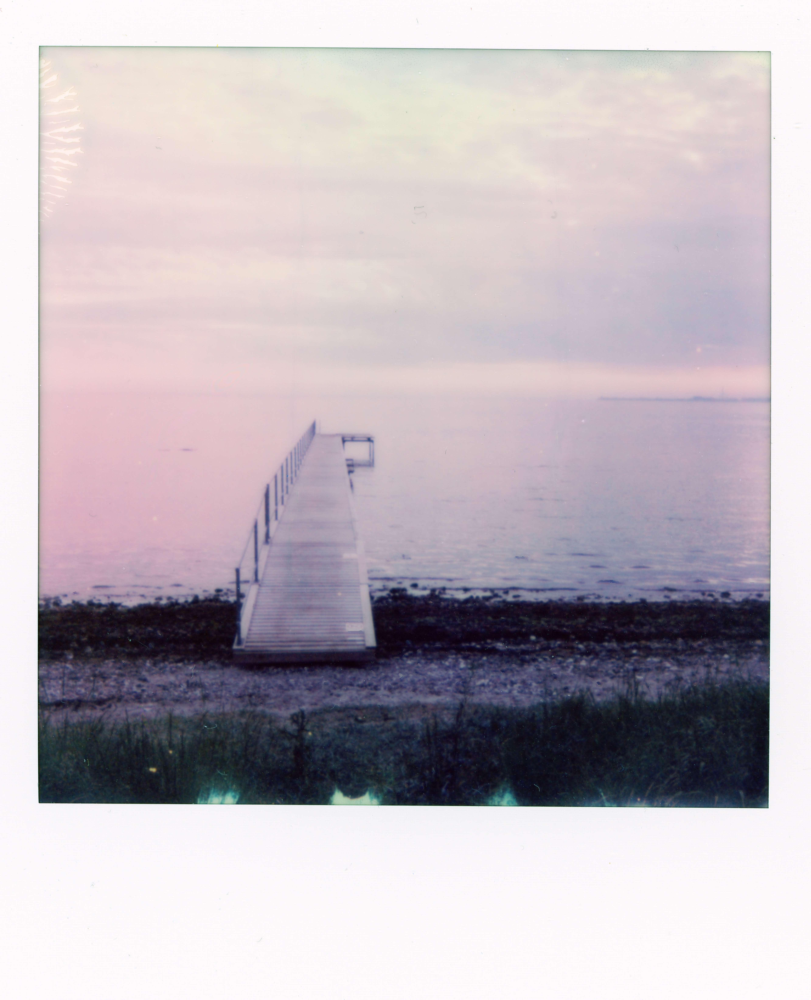
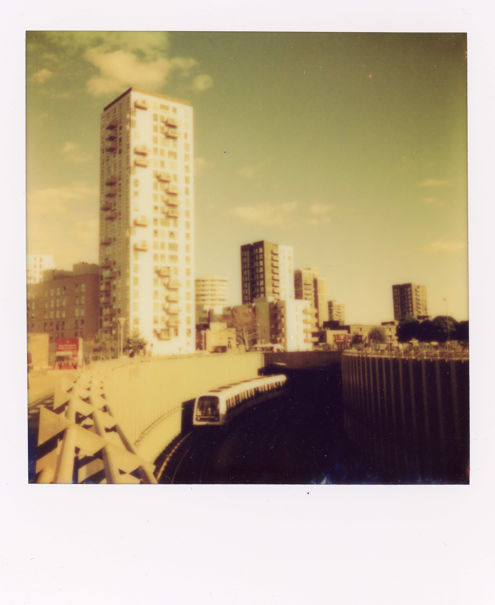
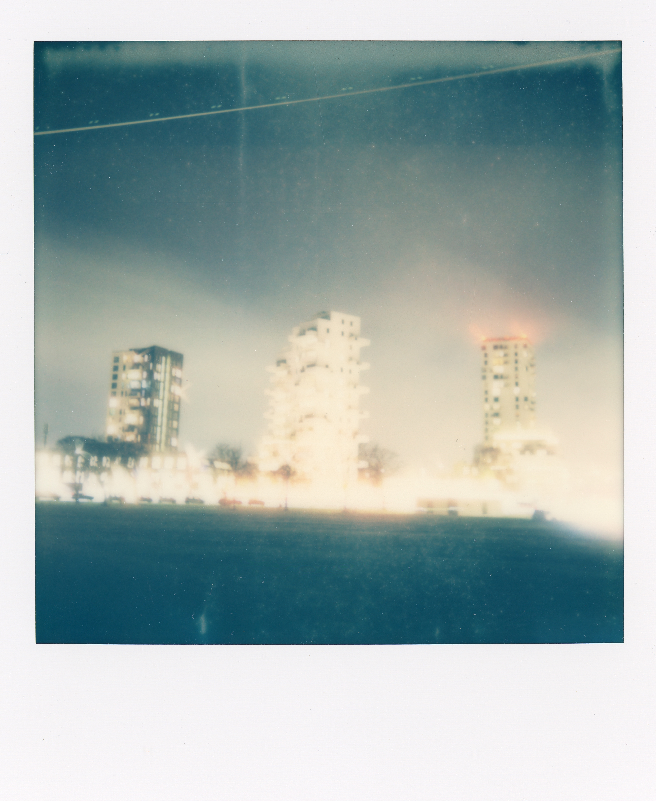
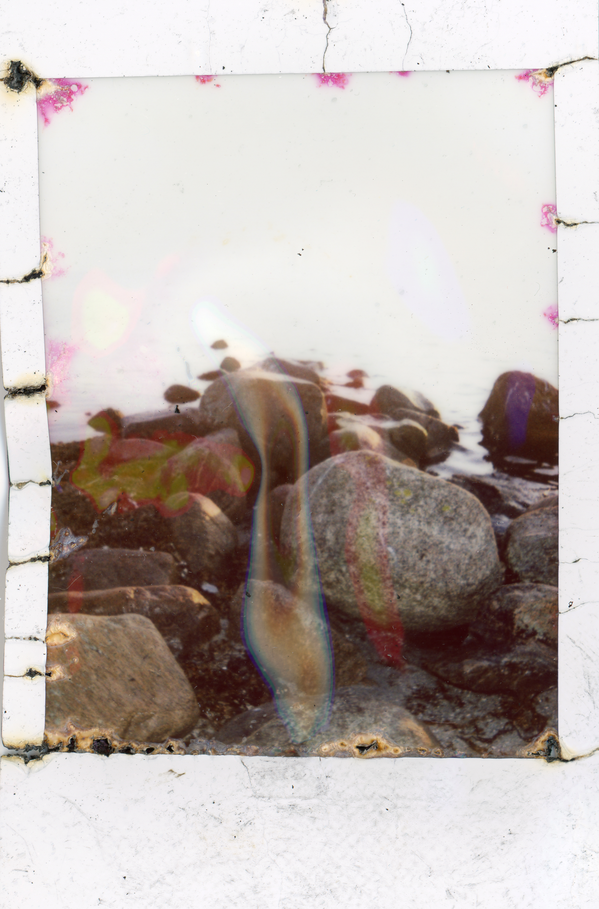
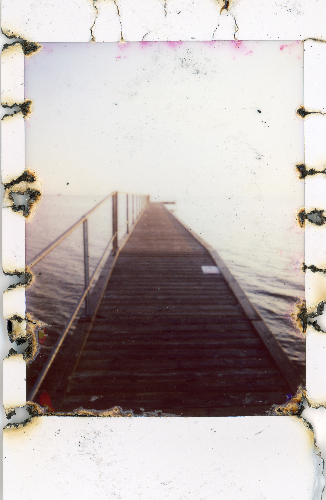

Vindere og nominerede
Instant Ugen var noget af en succes med over 276 bidrag. Så det var ikke nemt at finde en vinder. Efter et par lange, men spændende dage, blev dommerne enige om vinderen og de 15 nominerede.
276 Deltagere
784 Instants
Instax Mini
Last contest winner

Løserup Strand
Stefan Grage
For koldt til at tage en dukkert. Så jeg tog et billede i stedet. Polaroidet gav et forfærdeligt magenta farveskær, men jeg endte med at kunne lide det. Taget med et Polaroid Now+ gen 2 og en i-Type-film, som jeg sandsynligvis opbevarede forkert.
The nominees

Amager Fælled
Stefan Grage
Et lille snapshot fra Amager Fælled, en stor skov i den sydvestlige del af København, Danmark. Taget med et Lomomatic Square.

Amager Forbrænding
Stefan Grage
Jeg ville give min højre arm for en smøg. Taget med et Lomomatic Square.

Amager Strand
Stefan Grage
Fra denne vinkel ligner København en storby. Taget med et Polaroid Now+ Gen 2, med et gult filter.

Hænderne væk fra mit happy meal!
Stefan Grage
Et tilfældigt billede fra Burger King. Som det fremgår, ville den yngste ikke dele sit Happy Meal (eller hvad et børnemåltid nu kaldes på Burger King). Taget med et Instax Mini (kan ikke huske hvilket kamera).

2 x Ørestad
Stefan Grage
En dobbelteksponering fra mit nabolag, Ørestad. Taget med et Lomomatic Square..
Løserup Strand
Stefan Grage
For koldt til at tage en dukkert. Så jeg tog et billede i stedet. Polaroidet gav et forfærdeligt magenta farveskær, men jeg endte med at kunne lide det. Taget med et Polaroid Now+ gen 2 og en i-Type-film, som jeg sandsynligvis opbevarede forkert.

Noget nyt og noget gammelt
Stefan Grage
Jeg ville fange den nye bydel, Ørestad, i en bedste retro-stil. Så jeg brugte et Polaroid Now+ gen 2 på et stativmed en i-Type sort-hvid film for at lave en lang eksponering.

Karlstrup og kaffe
Stefan Grage
Den smukke natur i en tidligere kalkgrav med et twist af kaffe: Polaroidet blev lagt i blød i kaffe i et par uger. Det gav en flot kulør. Kamera: Polaroid-flip.

Amager Strand om natten
Stefan Grage
Amager Strand, København. Lokalt omtalt som Københavns mini-Manhattan. Lang eksponering, Polaroid Now+ gen 2 i manuel tilstand med en i-Type farvefilm for at lave en lang eksponering.

Stranden
Stefan Grage
Amager Strand ligger tæt på havet. Så jeg ville give dette polaroidkamera et twist af vand: Polaroidkameraet blev lagt i blød i vand i omkring tre uger. Jeg brugte et Polaroid Now+ gen 2.

Brændte mandler 1
Stefan Grage
Stranden ved mit sommerhus i Løserup. Udløbet instax mini-film. Jeg varmede den i mikrobølgeovnen. Jeg burde have læst lidt om, hvordan man varmer et instant-foto i mikrobølgeovnen: Fotoet brød i brand i ovnen.

Brændte mandler 2
Stefan Grage
Stranden ved mit sommerhus i Løserup. Udløbet instax mini-film. Jeg varmede den i mikrobølgeovnen. Jeg burde have læst lidt om, hvordan man varmer et instant-foto i mikrobølgeovnen: Fotoet brød i brand i ovnen.

Nordhavn om natten
Stefan Grage
Nordhavn, København, om natten. Lang eksponering med udløbet film. Jeg brugte en Polaroid Flip i manuel tilstand med en i-Type film for at lave en lang eksponering.

Strandbajer
Stefan Grage
Løserup strand i Holbæk. Et rigtigt bajer-sted. Så jeg ville give polaroidet et twist af øl: Polaroidet har ligget i blød i Pripps blå - en billig, svensk øl - i omkring tre uger. Jeg brugte et Polaroid Flip og udløbet film.

Abstrakt øl
Stefan Grage
Løserup strand i Holbæk. Polaroidbilledet blev lagt i blød i øl i omkring tre uger, hvilket forvandlede landskabet til et uigenkendeligt farvemønster. Jeg brugte et Polaroid Flip, udløbet film og en dåse Pripps blå øl.